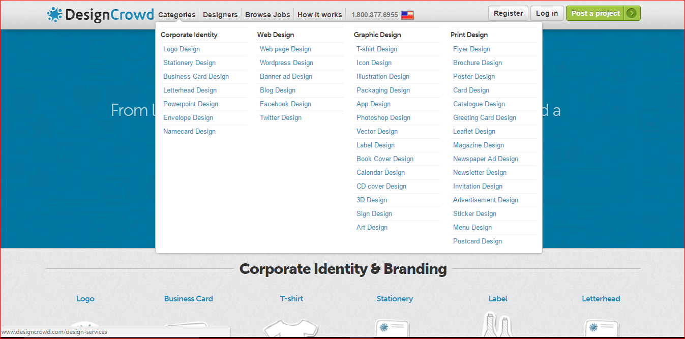
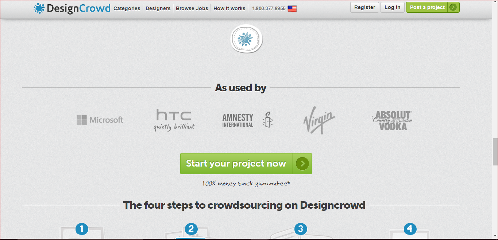

I really liked in these tabs, how they are neatly floating in the header. They are noticeable and clear yet discreet. When one hovers on them, then as you can see in the second picture, the whole header-nav bar fades into a white background. The navs are now even clearer and when one hovers over a nav, it gets a blue line above it. I think its very neat and professional. I would like to have a sleek, calm and pretty image im the background and use the same effect of having navs just written on top of page and when hovered upon, have header show.
The nav is fixed to the top of the page - as can be seen in the second 2 images when one has scrolled further down in site, yet nav bar remains fixed at the top of page. I think it is very effective to have the nav fixed so one can quickly change page without having to scroll back up to top of site. Again, when one hovers over a nav, the nav has an effect done. Here, the nav hovered gets an orange background. This makes it very clear for the user to know exactly where he is about to press. I like this effect too. I would like to have the header come up when hovering over navs, and each nav also having an effect when hovering on. Perhaps font / background changing colour.
 Here, the nav in the header again, and is fixed as well. I love the texture on the nav. It has a mettalic feel, really giving the impression of a clean, modern button, inviting the user to press! Here, the nav has no effect applied when hovered or clicked upon. The dropdown appearing when clicked upon, does have an arrow indicating it is coming from its corresponding nav, but I find it a little unclear. I would do an effect when hovering / clicking upon it.